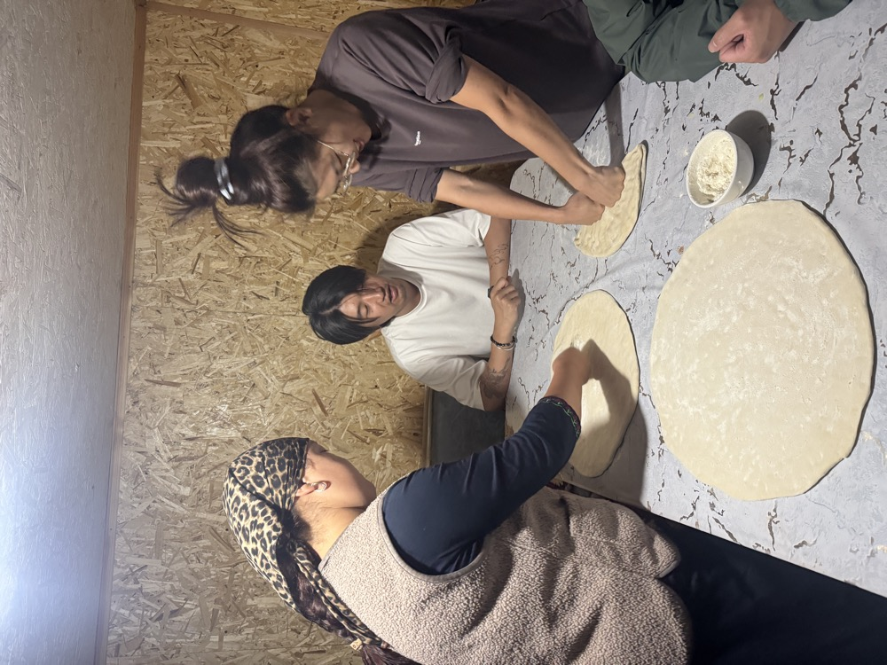
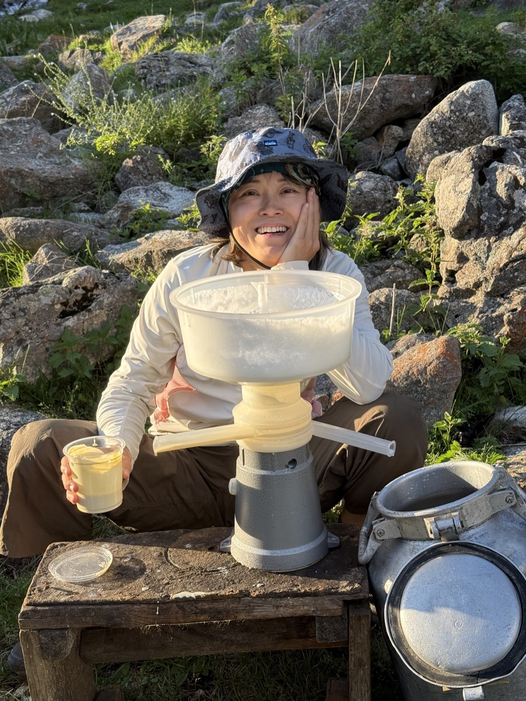
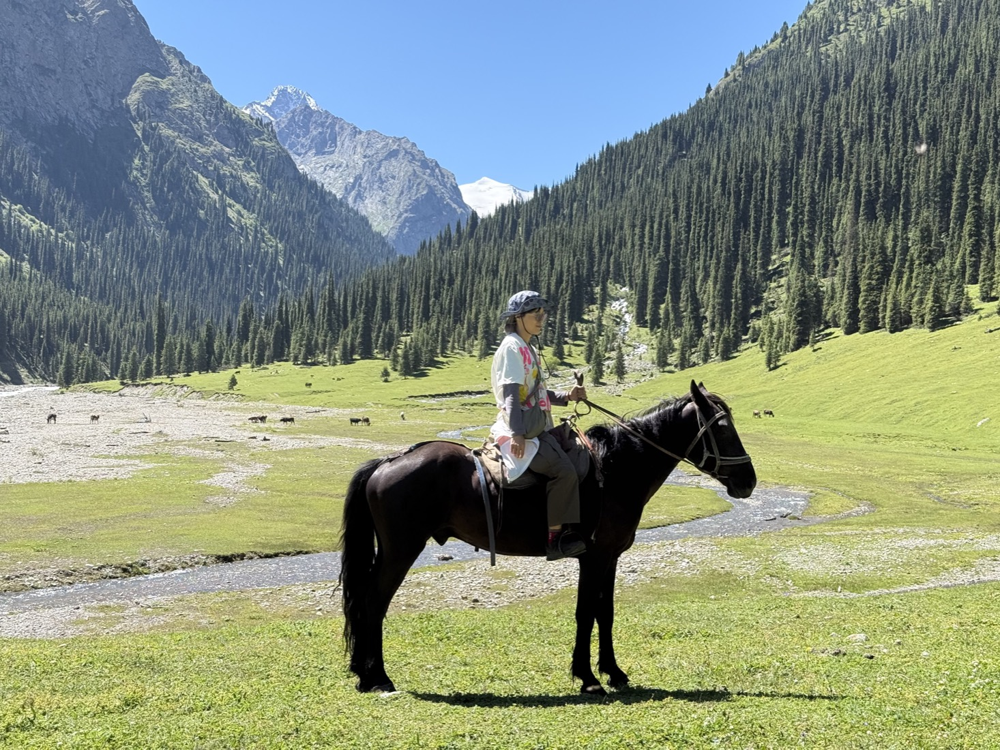
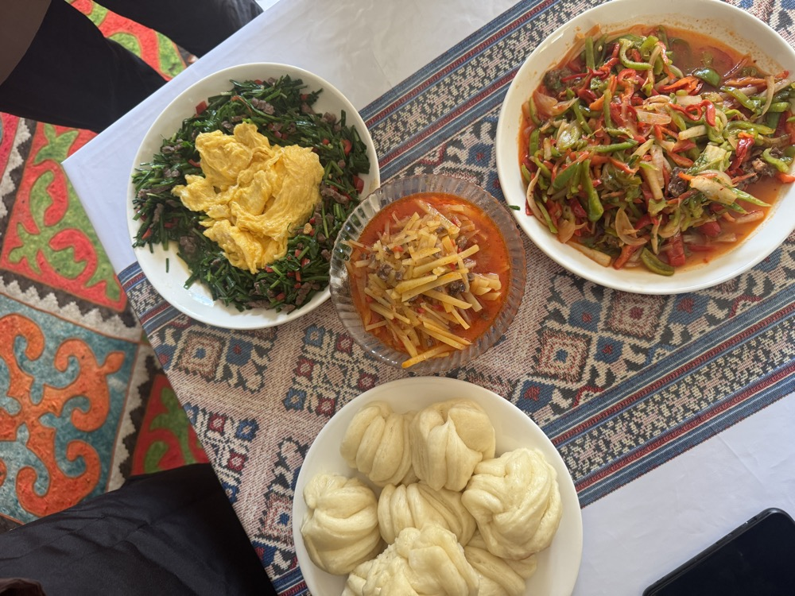
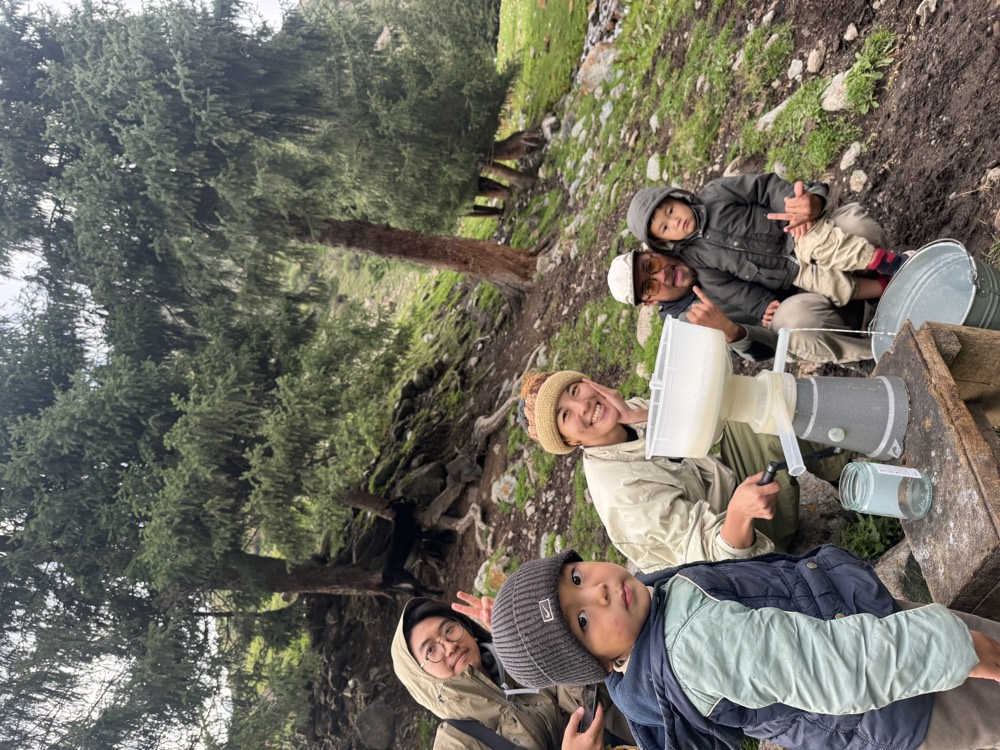

與家庭同住三晚
住在家庭的氈房或木屋裡，遠離道路與訊號。
大多數吉爾吉斯行程只會在遊牧人家停下來喝杯茶，這趟旅程則是住下來。三個晚上，你會和一個牧民家庭一起生活在伊塞克湖南岸上方的山裡：早上擠奶，做鮮奶油（kaimak）、奶油和炸麵球（boorsok），跟著牧民騎馬穿越牧場，傍晚泡在天然溫泉裡洗去一天的疲憊。
環繞著這段生活的，是一圈伊塞克湖之旅：出發時造訪布拉納塔和金雕獵鷹人，接著是童話峽谷、七牛岩上方的山脊健行，以及在卡拉科爾的兩晚，有峽谷健行和東干家庭料理課。

住在家庭的氈房或木屋裡，遠離道路與訊號。

幫忙擠奶、做鮮奶油和奶油，和家人一起炸麵球。

騎馬半天穿越牧場，步調悠閒，適合初學者。

在伊塞克湖南岸，看鷹獵人放飛他的金雕。

童話峽谷、七牛岩上方的山脊健行，以及天然溫泉。

在卡拉科爾的東干家庭裡，學做涼粉（ashlyanfu）和其他東干料理。
與遊牧家庭同住三晚是真實的生活，不是表演：條件簡單、早起、沒有訊號。對適合的旅人來說，這會是吉爾吉斯最難忘的一段。
每位旅人都請親自閱讀，並一併詳讀每日行程。
與遊牧家庭同住 3 晚，住在他們山裡的氈房或木屋。1 晚民宿在 Bokonbaevo，3 晚民宿在卡拉科爾。
和家庭同住時連續 3 晚沒有淋浴；你會在附近的天然溫泉梳洗。廁所是簡易戶外廁所，共用。第 5 天回到卡拉科爾就有熱水澡。
牧場上沒有 Wi-Fi，手機訊號也很弱或沒有。充電可能只靠小型太陽能板，請攜帶行動電源。
家庭的一天跟著牲畜和天氣走。安排很有彈性：有些日子很忙，有些很慢，每個家庭也都有些不同。
家人吃什麼，你就吃什麼：麵包、乳製品、肉和麵食，還有很多茶。如有飲食需求（素食、不吃羊肉、過敏），請在預訂時告訴我們。
夏天白天溫暖，但山上的夜晚很冷，即使八月也是。請帶保暖衣物、帽子和睡袋內套。
不需要經驗。第 4 天你會和家裡的牧民騎馬約半天，步調悠閒，適合初學者。
進氈房請脫鞋，拍人之前先詢問，也請接受主人的茶。學幾句吉爾吉斯語，例如 rakhmat（謝謝），會讓人很開心。
| 天 | 住宿 | 淋浴 | 廁所 | Wi-Fi / 訊號 |
|---|---|---|---|---|
| 第 0 天 | 比什凱克飯店（已包含） | 房內熱水淋浴 | 有，房內 | Wi-Fi |
| 第 1 天 | Altyn Oimok 或 Elestet，Bokonbaevo | 有；熱水有限，請勿使用太久 | 共用 | 有 |
| 第 2 天 | 遊牧家庭的氈房或木屋 | 無淋浴，在天然溫泉梳洗 | 簡易戶外廁所，共用 | 無 |
| 第 3 天 | 遊牧家庭的氈房或木屋 | 天然溫泉 | 簡易戶外廁所，共用 | 無 |
| 第 4 天 | 遊牧家庭的氈房或木屋 | 只有天然溫泉 | 簡易戶外廁所，共用 | 無 |
| 第 5 天 | 78 Hotel 或 Matsunoki，Karakol | 有；熱水有限，請勿使用太久 | 有，房內 | 有 |
| 第 6 天 | 78 Hotel 或 Matsunoki，Karakol | 有；熱水有限，請勿使用太久 | 有，房內 | 有 |
| 第 7 天 | 78 Hotel 或 Matsunoki，Karakol | 有；熱水有限，請勿使用太久 | 有，房內 | 有 |

抵達比什凱克
行程全部從 Day 0 開始（住宿包含在行程內）。抵達比什凱克後入住首都的飯店，好好洗個舒服的熱水澡，迎接吉爾吉斯的旅程。

比什凱克 → 布拉納塔 → Bokonbaevo
旅程從前往布拉納塔開始，這座 11 世紀的宣禮塔孤立在楚河谷，周圍是被稱為 balbal 的古老石人。途中享用午餐後，沿著伊塞克湖前往安靜的南岸。傍晚與鷹獵人（berkutchi）相遇，看他的金雕進行狩獵示範。

Bokonbaevo → 童話峽谷 → Barskoon → 遊牧家庭
早上可以在伊塞克湖邊游泳或散步。接著造訪童話峽谷（Skazka），風雨把彩色岩石雕成了城堡和巨龍的模樣。在 Barskoon 享用家庭午餐後，驅車進山與遊牧主人家見面。下午安頓下來、認識這家人，看牲畜傍晚回家的日常。

與遊牧家庭同住
今天加入這家人的日常節奏。早上幫忙擠奶，接著學做鮮奶油（kaimak）和奶油，再一起炸麵球（boorsok）——吉爾吉斯每張餐桌上都有的炸麵包。之後到附近的山裡健行，最後泡天然溫泉結束這一天。
與遊牧家庭同住
早上慢慢開始，日出時喝杯茶、做些輕鬆的伸展。接著跟著家裡的牧民騎馬半天穿越牧場，步調悠閒，適合初學者。回到家後和家人一起做一頓飯，晚上是告別之夜。
遊牧家庭 → 七牛岩 → 卡拉科爾
早餐後與主人家道別，驅車前往七牛岩（Jeti-Oguz），在山谷上方的紅岩山脊健行，避開一般遊客的拍照點。在卡拉科爾享用午餐後，入住卡拉科爾的民宿，好好洗個澡、睡張舒服的床。
卡拉科爾峽谷與卡拉科爾小鎮
早上沿著山間溪流，穿過雲杉林走進卡拉科爾峽谷健行，接著在河邊享用午餐。下午認識卡拉科爾多元的文化：由俄羅斯移民建造的木造聖三一教堂，以及不用一根釘子、以中式廟宇風格建成的東干清真寺。晚上受邀到東干家庭上料理課，學做傳統菜餚，例如卡拉科爾著名的涼粉（ashlyanfu），也聽他們講述東干人如何在 19 世紀從中國遷徙到這裡，並保留了自己的語言、飲食和習俗。晚餐就是大家一起做的這一桌菜。

卡拉科爾
今天沒有長途車程。慢慢吃完早餐後，回到卡拉科爾峽谷，選擇你喜歡的方式探索：跟著在地嚮導騎馬，或沿著雲杉林和山間溪流旁的步道健行。想走多遠都可以，下午回到卡拉科爾，在返回比什凱克前度過一個悠閒的夜晚。

卡拉科爾 → 喬爾蓬阿塔 → 比什凱克
沿伊塞克湖返程途中，在喬爾蓬阿塔停留，看刻在巨石上的古老岩畫，或搭乘短程遊船遊湖。之後在路邊的家庭咖啡館喝茶，配上剛出爐的千層餅（kattama）。傍晚抵達比什凱克享用晚餐。
行程結束後，我們會送您回首都的飯店休息（若您搭乘晚班飛機，也可以免費送您到機場）。
在旅途中，你可能會品嚐到以下經典料理：

手切麵佐清燉肉。最具代表性的吉爾吉斯料理，象徵節慶與款待。

炒羊肉／牛肉，搭配馬鈴薯與洋蔥，是遊牧人的家常菜。

用胡蘿蔔、肉、米飯燉煮而成，香氣濃郁。

手工拉麵加入蔬菜與牛肉，是中亞常見的麵食。

以傳統土窯烘烤，外酥內多汁。

露天炭烤，是旅途中最常見的香味。